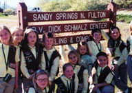

Teachers
Teacher workshops are scheduled throughout the year. The workshops currently offered include:
Project Learning Tree
The national and state-approved environmental education curriculum of the American Forest Foundation and the Council for Environmental Education, grades K-12.
Waste in Place
The national and state-approved solid waste curriculum developed by Keep America Beautiful, grades K-6.
Project Wet
The national and state-approved water quality education curriculum of The Watercourse and the Council for Environmental Education, grades K-12.
Terrific Trees
Workshops include the Project Learning Tree curriculum with hands-on tree planting and care demonstrations.
The above workshops offer teachers the curriculum and an educator's certificate for teaching activities to students. Staff development credit towards teacher re-certification may be arranged through 10-hour workshops offered on several consecutive weekday afternoons, but must be coordinated through the Curriculum Support teacher at each school. The Terrific Trees workshop is an example of a 10-hour workshop that includes the Project Learning Tree curriculum and additional related activities.